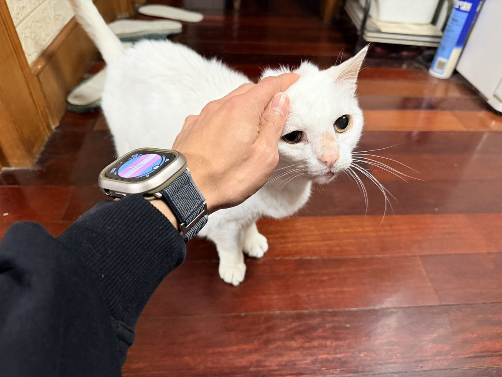

大笨蛋不會溝通🕊bsky.app
@appleneko2001
RT @TheCyclist400: 哎呦我的十八岁的老伙计…
最早被装在鞋盒子里遗弃在路边，只有一巴掌那么大，被客户捡了回去和一只大德牧养在一起，大德牧还会舔舔它…
没几天就被我抱回家了，一眨眼就是这么久…
它和我同辈啦，我爸排的辈儿，它一共经历了三任嫂子，也经历了哥哥…

Lulu.C
@TheCyclist400
哎呦我的十八岁的老伙计…
最早被装在鞋盒子里遗弃在路边，只有一巴掌那么大，被客户捡了回去和一只大德牧养在一起，大德牧还会舔舔它…
没几天就被我抱回家了，一眨眼就是这么久…
它和我同辈啦，我爸排的辈儿，它一共经历了三任嫂子，也经历了哥哥变姐姐🤪🤪🤪 https://t.co/HWnMM6jRns